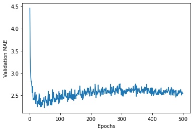
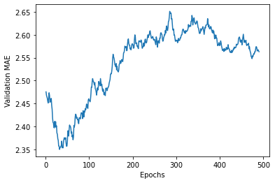

<!DOCTYPE html>
<html lang=en>
<head>
    <!-- so meta -->
    <meta charset="utf-8">
    <meta http-equiv="X-UA-Compatible" content="IE=edge">
    <meta name="HandheldFriendly" content="True">
    <meta name="viewport" content="width=device-width, initial-scale=1, maximum-scale=5" />
    <meta name="description" content="Importing Dependencies1234import keraskeras.__version__from keras.datasets import boston_housing  Importing Dataset1(train_data, train_targets), (test_data, test_targets) &#x3D;  boston_housing.load_data()">
<meta property="og:type" content="article">
<meta property="og:title" content="Supervised Learning : Regression">
<meta property="og:url" content="https://zarif98sjs.github.io/mindcraft/Regression/index.html">
<meta property="og:site_name" content="MindCraft">
<meta property="og:description" content="Importing Dependencies1234import keraskeras.__version__from keras.datasets import boston_housing  Importing Dataset1(train_data, train_targets), (test_data, test_targets) &#x3D;  boston_housing.load_data()">
<meta property="og:locale" content="en_US">
<meta property="og:image" content="https://zarif98sjs.github.io/mindcraft/Regression/output_23_0.png">
<meta property="og:image" content="https://zarif98sjs.github.io/mindcraft/Regression/output_25_0.png">
<meta property="article:published_time" content="2020-06-28T00:00:00.000Z">
<meta property="article:modified_time" content="2021-04-27T08:28:10.611Z">
<meta property="article:author" content="Md. Zarif Ul Alam">
<meta property="article:tag" content="Algo, DS, Software &amp; What Not!">
<meta property="article:tag" content="Learning Notes">
<meta name="twitter:card" content="summary">
<meta name="twitter:image" content="https://zarif98sjs.github.io/mindcraft/Regression/output_23_0.png">
    
    
      
        
          <link rel="shortcut icon" href="/mindcraft/images/favicon.ico">
        
      
      
        
          <link rel="icon" type="image/png" href="/mindcraft/images/favicon-192x192.png" sizes="192x192">
        
      
      
        
          <link rel="apple-touch-icon" sizes="180x180" href="/mindcraft/images/apple-touch-icon.png">
        
      
    
    <!-- title -->
    <title>Supervised Learning : Regression</title>
    <!-- styles -->
    
<link rel="stylesheet" href="/mindcraft/css/style.css">

    <!-- persian styles -->
    
    <!-- rss -->
    
    
	<!-- mathjax -->
	
		<script type="text/x-mathjax-config">
		  MathJax.Hub.Config({
			tex2jax: {
			  skipTags: ['script', 'noscript', 'style', 'textarea', 'pre'],
			  inlineMath: [['$','$']]
			}
		  });
		</script>
		<script src='https://cdnjs.cloudflare.com/ajax/libs/mathjax/2.7.5/latest.js?config=TeX-MML-AM_CHTML' async></script>
	
<meta name="generator" content="Hexo 5.4.0"></head>

<body class="max-width mx-auto px3 ltr">
    
      <div id="header-post">
  <a id="menu-icon" href="#" aria-label="Menu"><i class="fas fa-bars fa-lg"></i></a>
  <a id="menu-icon-tablet" href="#" aria-label="Menu"><i class="fas fa-bars fa-lg"></i></a>
  <a id="top-icon-tablet" href="#" "Top" onclick="$('html, body').animate({ scrollTop: 0 }, 'fast');" style="display:none;"><i class="fas fa-chevron-up fa-lg"></i></a>
  <span id="menu">
    <span id="nav">
      <ul>
         
          <li><a href="/mindcraft/">Home</a></li>
         
          <li><a href="/mindcraft/archives/">Archive</a></li>
         
          <li><a href="https://zarif98sjs.github.io/">About Me</a></li>
        
      </ul>
    </span>
    <br/>
    <span id="actions">
      <ul>
        
        <li><a class="icon" aria-label="Previous post " href="/mindcraft/CNN-Part-1/"><i class="fas fa-chevron-left" aria-hidden="true" onmouseover="$('#i-prev').toggle();" onmouseout="$('#i-prev').toggle();"></i></a></li>
        
        
        <li><a class="icon" aria-label="Next post " href="/mindcraft/MulticlassClassification/"><i class="fas fa-chevron-right" aria-hidden="true" onmouseover="$('#i-next').toggle();" onmouseout="$('#i-next').toggle();"></i></a></li>
        
        <li><a class="icon" aria-label="Back to top " href="#" onclick="$('html, body').animate({ scrollTop: 0 }, 'fast');"><i class="fas fa-chevron-up" aria-hidden="true" onmouseover="$('#i-top').toggle();" onmouseout="$('#i-top').toggle();"></i></a></li>
        <li><a class="icon" aria-label="Share post " href="#"><i class="fas fa-share-alt" aria-hidden="true" onmouseover="$('#i-share').toggle();" onmouseout="$('#i-share').toggle();" onclick="$('#share').toggle();return false;"></i></a></li>
      </ul>
      <span id="i-prev" class="info" style="display:none;">Previous post</span>
      <span id="i-next" class="info" style="display:none;">Next post</span>
      <span id="i-top" class="info" style="display:none;">Back to top</span>
      <span id="i-share" class="info" style="display:none;">Share post</span>
    </span>
    <br/>
    <div id="share" style="display: none">
      <ul>
  <li><a class="icon" target="_blank" rel="noopener" href="http://www.facebook.com/sharer.php?u=https://zarif98sjs.github.io/mindcraft/Regression/"><i class="fab fa-facebook " aria-hidden="true"></i></a></li>
  <li><a class="icon" target="_blank" rel="noopener" href="https://twitter.com/share?url=https://zarif98sjs.github.io/mindcraft/Regression/&text=Supervised Learning : Regression"><i class="fab fa-twitter " aria-hidden="true"></i></a></li>
  <li><a class="icon" target="_blank" rel="noopener" href="http://www.linkedin.com/shareArticle?url=https://zarif98sjs.github.io/mindcraft/Regression/&title=Supervised Learning : Regression"><i class="fab fa-linkedin " aria-hidden="true"></i></a></li>
  <li><a class="icon" target="_blank" rel="noopener" href="https://pinterest.com/pin/create/bookmarklet/?url=https://zarif98sjs.github.io/mindcraft/Regression/&is_video=false&description=Supervised Learning : Regression"><i class="fab fa-pinterest " aria-hidden="true"></i></a></li>
  <li><a class="icon" href="mailto:?subject=Supervised Learning : Regression&body=Check out this article: https://zarif98sjs.github.io/mindcraft/Regression/"><i class="fas fa-envelope " aria-hidden="true"></i></a></li>
  <li><a class="icon" target="_blank" rel="noopener" href="https://getpocket.com/save?url=https://zarif98sjs.github.io/mindcraft/Regression/&title=Supervised Learning : Regression"><i class="fab fa-get-pocket " aria-hidden="true"></i></a></li>
  <li><a class="icon" target="_blank" rel="noopener" href="http://reddit.com/submit?url=https://zarif98sjs.github.io/mindcraft/Regression/&title=Supervised Learning : Regression"><i class="fab fa-reddit " aria-hidden="true"></i></a></li>
  <li><a class="icon" target="_blank" rel="noopener" href="http://www.stumbleupon.com/submit?url=https://zarif98sjs.github.io/mindcraft/Regression/&title=Supervised Learning : Regression"><i class="fab fa-stumbleupon " aria-hidden="true"></i></a></li>
  <li><a class="icon" target="_blank" rel="noopener" href="http://digg.com/submit?url=https://zarif98sjs.github.io/mindcraft/Regression/&title=Supervised Learning : Regression"><i class="fab fa-digg " aria-hidden="true"></i></a></li>
  <li><a class="icon" target="_blank" rel="noopener" href="http://www.tumblr.com/share/link?url=https://zarif98sjs.github.io/mindcraft/Regression/&name=Supervised Learning : Regression&description="><i class="fab fa-tumblr " aria-hidden="true"></i></a></li>
  <li><a class="icon" target="_blank" rel="noopener" href="https://news.ycombinator.com/submitlink?u=https://zarif98sjs.github.io/mindcraft/Regression/&t=Supervised Learning : Regression"><i class="fab fa-hacker-news " aria-hidden="true"></i></a></li>
</ul>

    </div>
    <div id="toc">
      <ol class="toc"><li class="toc-item toc-level-1"><a class="toc-link" href="#Importing-Dependencies"><span class="toc-number">1.</span> <span class="toc-text">Importing Dependencies</span></a></li><li class="toc-item toc-level-1"><a class="toc-link" href="#Importing-Dataset"><span class="toc-number">2.</span> <span class="toc-text">Importing Dataset</span></a></li><li class="toc-item toc-level-1"><a class="toc-link" href="#Prepating-the-data"><span class="toc-number">3.</span> <span class="toc-text">Prepating the data</span></a></li><li class="toc-item toc-level-1"><a class="toc-link" href="#A-very-important-note"><span class="toc-number">4.</span> <span class="toc-text">A very important note</span></a></li><li class="toc-item toc-level-1"><a class="toc-link" href="#Building-the-neural-network"><span class="toc-number">5.</span> <span class="toc-text">Building the neural network</span></a><ol class="toc-child"><li class="toc-item toc-level-2"><a class="toc-link" href="#Architecture"><span class="toc-number">5.1.</span> <span class="toc-text">Architecture</span></a></li><li class="toc-item toc-level-2"><a class="toc-link" href="#Compile"><span class="toc-number">5.2.</span> <span class="toc-text">Compile</span></a></li></ol></li><li class="toc-item toc-level-1"><a class="toc-link" href="#K-fold-validation"><span class="toc-number">6.</span> <span class="toc-text">K-fold validation</span></a></li></ol>
    </div>
  </span>
</div>

    
    <div class="content index py4">
        
        <article class="post" itemscope itemtype="http://schema.org/BlogPosting">
  <header>
    
    <h1 class="posttitle" itemprop="name headline">
        Supervised Learning : Regression
    </h1>


    <div class="meta">
      <span class="author" itemprop="author" itemscope itemtype="http://schema.org/Person">
        <span itemprop="name">Md. Zarif Ul Alam</span>
      </span>
      
    <div class="postdate">
      
        <time datetime="2020-06-28T00:00:00.000Z" itemprop="datePublished">2020-06-28</time>
        
      
    </div>


      
    <div class="article-category">
        <i class="fas fa-archive"></i>
        <a class="category-link" href="/mindcraft/categories/Machine-Learning/">Machine Learning</a> › <a class="category-link" href="/mindcraft/categories/Machine-Learning/Tensorflow/">Tensorflow</a>
    </div>


      
    <div class="article-tag">
        <i class="fas fa-tag"></i>
        <a class="tag-link-link" href="/mindcraft/tags/Algo-DS-Software-What-Not/" rel="tag">Algo, DS, Software & What Not!</a>, <a class="tag-link-link" href="/mindcraft/tags/Learning-Notes/" rel="tag">Learning Notes</a>
    </div>


    </div>
  </header>
  

  <div class="content" itemprop="articleBody">
    <h1 id="Importing-Dependencies"><a href="#Importing-Dependencies" class="headerlink" title="Importing Dependencies"></a>Importing Dependencies</h1><figure class="highlight python"><table><tr><td class="gutter"><pre><span class="line">1</span><br><span class="line">2</span><br><span class="line">3</span><br><span class="line">4</span><br></pre></td><td class="code"><pre><span class="line"><span class="keyword">import</span> keras</span><br><span class="line">keras.__version__</span><br><span class="line"></span><br><span class="line"><span class="keyword">from</span> keras.datasets <span class="keyword">import</span> boston_housing</span><br></pre></td></tr></table></figure>

<h1 id="Importing-Dataset"><a href="#Importing-Dataset" class="headerlink" title="Importing Dataset"></a>Importing Dataset</h1><figure class="highlight python"><table><tr><td class="gutter"><pre><span class="line">1</span><br></pre></td><td class="code"><pre><span class="line">(train_data, train_targets), (test_data, test_targets) =  boston_housing.load_data()</span><br></pre></td></tr></table></figure>

<pre><code>Downloading data from https://s3.amazonaws.com/keras-datasets/boston_housing.npz
57344/57026 [==============================] - 0s 5us/step
</code></pre>
<figure class="highlight python"><table><tr><td class="gutter"><pre><span class="line">1</span><br><span class="line">2</span><br></pre></td><td class="code"><pre><span class="line">train_data.shape</span><br><span class="line"></span><br></pre></td></tr></table></figure>


<pre><code>(404, 13)
</code></pre>
<figure class="highlight python"><table><tr><td class="gutter"><pre><span class="line">1</span><br><span class="line">2</span><br></pre></td><td class="code"><pre><span class="line">test_data.shape</span><br><span class="line"></span><br></pre></td></tr></table></figure>


<pre><code>(102, 13)
</code></pre>
<figure class="highlight python"><table><tr><td class="gutter"><pre><span class="line">1</span><br></pre></td><td class="code"><pre><span class="line">train_data</span><br></pre></td></tr></table></figure>


<pre><code>array([[1.23247e+00, 0.00000e+00, 8.14000e+00, ..., 2.10000e+01,
        3.96900e+02, 1.87200e+01],
       [2.17700e-02, 8.25000e+01, 2.03000e+00, ..., 1.47000e+01,
        3.95380e+02, 3.11000e+00],
       [4.89822e+00, 0.00000e+00, 1.81000e+01, ..., 2.02000e+01,
        3.75520e+02, 3.26000e+00],
       ...,
       [3.46600e-02, 3.50000e+01, 6.06000e+00, ..., 1.69000e+01,
        3.62250e+02, 7.83000e+00],
       [2.14918e+00, 0.00000e+00, 1.95800e+01, ..., 1.47000e+01,
        2.61950e+02, 1.57900e+01],
       [1.43900e-02, 6.00000e+01, 2.93000e+00, ..., 1.56000e+01,
        3.76700e+02, 4.38000e+00]])
</code></pre>
<figure class="highlight python"><table><tr><td class="gutter"><pre><span class="line">1</span><br><span class="line">2</span><br><span class="line">3</span><br></pre></td><td class="code"><pre><span class="line"><span class="comment"># the prices</span></span><br><span class="line">train_targets</span><br><span class="line"></span><br></pre></td></tr></table></figure>


<pre><code>array([15.2, 42.3, 50. , 21.1, 17.7, 18.5, 11.3, 15.6, 15.6, 14.4, 12.1,
       17.9, 23.1, 19.9, 15.7,  8.8, 50. , 22.5, 24.1, 27.5, 10.9, 30.8,
       32.9, 24. , 18.5, 13.3, 22.9, 34.7, 16.6, 17.5, 22.3, 16.1, 14.9,
       23.1, 34.9, 25. , 13.9, 13.1, 20.4, 20. , 15.2, 24.7, 22.2, 16.7,
       12.7, 15.6, 18.4, 21. , 30.1, 15.1, 18.7,  9.6, 31.5, 24.8, 19.1,
       1.  , 14.5, 11. , 32. , 29.4, 20.3, 24.4, 14.6, 19.5, 14.1, 14.3,
       15.6, 10.5,  6.3, 19.3, 19.3, 13.4, 36.4, 17.8, 13.5, 16.5,  8.3,
       14.3, 16. , 13.4, 28.6, 43.5, 20.2, 22. , 23. , 20.7, 12.5, 48.5,
       14.6, 13.4, 23.7, 50. , 21.7, 39.8, 38.7, 22.2, 34.9, 22.5, 31.1,
       28.7, 46. , 41.7, 21. , 26.6, 15. , 24.4, 13.3, 21.2, 11.7, 21.7,
       19.4, 50. , 22.8, 19.7, 24.7, 36.2, 14.2, 18.9, 18.3, 20.6, 24.6,
       18.2,  8.7, 44. , 10.4, 13.2, 21.2, 37. , 30.7, 22.9, 20. , 19.3,
       31.7, 32. , 23.1, 18.8, 10.9, 50. , 19.6,  5. , 14.4, 19.8, 13.8,
       19.6, 23.9, 24.5, 25. , 19.9, 17.2, 24.6, 13.5, 26.6, 21.4, 11.9,
       22.6, 19.6,  8.5, 23.7, 23.1, 22.4, 20.5, 23.6, 18.4, 35.2, 23.1,
       27.9, 20.6, 23.7, 28. , 13.6, 27.1, 23.6, 20.6, 18.2, 21.7, 17.1,
        8.4, 25.3, 13.8, 22.2, 18.4, 20.7, 31.6, 30.5, 20.3,  8.8, 19.2,
       19.4, 23.1, 23. , 14.8, 48.8, 22.6, 33.4, 21.1, 13.6, 32.2, 13.1,
       23.4, 18.9, 23.9, 11.8, 23.3, 22.8, 19.6, 16.7, 13.4, 22.2, 20.4,
       21.8, 26.4, 14.9, 24.1, 23.8, 12.3, 29.1, 21. , 19.5, 23.3, 23.8,
       17.8, 11.5, 21.7, 19.9, 25. , 33.4, 28.5, 21.4, 24.3, 27.5, 33.1,
       16.2, 23.3, 48.3, 22.9, 22.8, 13.1, 12.7, 22.6, 15. , 15.3, 10.5,
       1.  , 18.5, 21.7, 19.5, 33.2, 23.2,  5. , 19.1, 12.7, 22.3, 10.2,
       13.9, 16.3, 17. , 20.1, 29.9, 17.2, 37.3, 45.4, 17.8, 23.2, 29. ,
       1.  , 18. , 17.4, 34.6, 20.1, 25. , 15.6, 24.8, 28.2, 21.2, 21.4,
       23.8, 31. , 26.2, 17.4, 37.9, 17.5, 20. ,  8.3, 23.9,  8.4, 13.8,
        7.2, 11.7, 17.1, 21.6, 50. , 16.1, 20.4, 20.6, 21.4, 20.6, 36.5,
        8.5, 24.8, 10.8, 21.9, 17.3, 18.9, 36.2, 14.9, 18.2, 33.3, 21.8,
       19.7, 31.6, 24.8, 19.4, 22.8,  7.5, 44.8, 16.8, 18.7, 50. , 50. ,
       19.5, 20.1, 50. , 17.2, 20.8, 19.3, 41.3, 20.4, 20.5, 13.8, 16.5,
       23.9, 20.6, 31.5, 23.3, 16.8, 14. , 33.8, 36.1, 12.8, 18.3, 18.7,
       19.1, 29. , 30.1, 50. , 50. , 22. , 11.9, 37.6, 50. , 22.7, 20.8,
       23.5, 27.9, 50. , 19.3, 23.9, 22.6, 15.2, 21.7, 19.2, 43.8, 20.3,
       33.2, 19.9, 22.5, 32.7, 22. , 17.1, 19. , 15. , 16.1, 25.1, 23.7,
       28.7, 37.2, 22.6, 16.4, 25. , 29.8, 22.1, 17.4, 18.1, 30.3, 17.5,
       24.7, 12.6, 26.5, 28.7, 13.3, 10.4, 24.4, 23. , 20. , 17.8,  7. ,
       11.8, 24.4, 13.8, 19.4, 25.2, 19.4, 19.4, 29.1])
</code></pre>
<h1 id="Prepating-the-data"><a href="#Prepating-the-data" class="headerlink" title="Prepating the data"></a>Prepating the data</h1><ul>
<li><strong>normalization</strong></li>
</ul>
<p><strong>As different features are on different scale ,<br>it is good practice and better for the neural network to normalize them</strong></p>
<p><strong>for each feature in the input data (a column in the input data matrix),<br>we will subtract the mean of the feature and divide by the standard deviation,<br>so that the feature will be centered around 0 and will have a unit standard deviation.</strong></p>
<figure class="highlight python"><table><tr><td class="gutter"><pre><span class="line">1</span><br><span class="line">2</span><br><span class="line">3</span><br><span class="line">4</span><br><span class="line">5</span><br><span class="line">6</span><br><span class="line">7</span><br></pre></td><td class="code"><pre><span class="line">mean = train_data.mean(axis=<span class="number">0</span>)</span><br><span class="line">train_data -= mean</span><br><span class="line">std = train_data.std(axis=<span class="number">0</span>)</span><br><span class="line">train_data /= std</span><br><span class="line"></span><br><span class="line">test_data -= mean</span><br><span class="line">test_data /= std</span><br></pre></td></tr></table></figure>

<h1 id="A-very-important-note"><a href="#A-very-important-note" class="headerlink" title="A very important note"></a>A very important note</h1><p><strong>Note that the quantities that we use for normalizing the test data have been computed<br>using the <em>training data</em> .<br>We should <em>never</em> use in our workflow any quantity computed on the test data,<br>even for something as simple as data <em>normalization</em></strong></p>
<h1 id="Building-the-neural-network"><a href="#Building-the-neural-network" class="headerlink" title="Building the neural network"></a>Building the neural network</h1><h2 id="Architecture"><a href="#Architecture" class="headerlink" title="Architecture"></a>Architecture</h2><p><strong>as the datset is really small , it is easy to overfit,<br>so , a small network is helpful to avoid that</strong></p>
<ul>
<li><strong>Intermediate Dense Layer : 2 , Hidden Units : 64 , Activation : Relu</strong></li>
<li><strong>Output Layer : 1 , Activation : None</strong></li>
</ul>
<p><strong>In the output layer , there is no activation function as that would constraint the output.</strong></p>
<p><strong>This is a typical setup for scalar regression (i.e. regression where we are trying to predict a single continuous value).<br> for instance if we applied a sigmoid activation function to our last layer,<br> the network could only learn to predict values between 0 and 1.<br> Here, because the last layer is purely linear,<br> the network is free to learn to predict values in any range.</strong></p>
<h2 id="Compile"><a href="#Compile" class="headerlink" title="Compile"></a>Compile</h2><ul>
<li><strong>Loss Function : mse(mean squared error)</strong></li>
<li><strong>Optimizer : rmsprop</strong></li>
<li><strong>Metrics : mae(mean absolute error)</strong></li>
</ul>
<p><strong>mse is a widely used loss function for regression problem</strong></p>
<p><strong>naturally, the concept of accuracy doesn’t apply for regression. A<br>common regression metric is mean absolute error (MAE).<br>It is simply the absolute value of the difference between the predictions and the targets.<br>For instance, a MAE of 0.5 on this problem would mean that our predictions<br>are off by $500 on average.</strong></p>
<figure class="highlight python"><table><tr><td class="gutter"><pre><span class="line">1</span><br><span class="line">2</span><br><span class="line">3</span><br><span class="line">4</span><br><span class="line">5</span><br><span class="line">6</span><br><span class="line">7</span><br><span class="line">8</span><br><span class="line">9</span><br><span class="line">10</span><br><span class="line">11</span><br><span class="line">12</span><br><span class="line">13</span><br><span class="line">14</span><br></pre></td><td class="code"><pre><span class="line"><span class="keyword">from</span> keras <span class="keyword">import</span> models</span><br><span class="line"><span class="keyword">from</span> keras <span class="keyword">import</span> layers</span><br><span class="line"></span><br><span class="line"><span class="function"><span class="keyword">def</span> <span class="title">get_model</span>():</span></span><br><span class="line">    <span class="comment"># Because we will need to instantiate</span></span><br><span class="line">    <span class="comment"># the same model multiple times,</span></span><br><span class="line">    <span class="comment"># we use a function to construct it.</span></span><br><span class="line">    model = models.Sequential()</span><br><span class="line">    model.add(layers.Dense(<span class="number">64</span>, activation=<span class="string">&#x27;relu&#x27;</span>,</span><br><span class="line">                           input_shape=(train_data.shape[<span class="number">1</span>],)))</span><br><span class="line">    model.add(layers.Dense(<span class="number">64</span>, activation=<span class="string">&#x27;relu&#x27;</span>))</span><br><span class="line">    model.add(layers.Dense(<span class="number">1</span>))</span><br><span class="line">    model.<span class="built_in">compile</span>(optimizer=<span class="string">&#x27;rmsprop&#x27;</span>, loss=<span class="string">&#x27;mse&#x27;</span>, metrics=[<span class="string">&#x27;mae&#x27;</span>])</span><br><span class="line">    <span class="keyword">return</span> model</span><br></pre></td></tr></table></figure>

<h1 id="K-fold-validation"><a href="#K-fold-validation" class="headerlink" title="K-fold validation"></a>K-fold validation</h1><p><strong>As the dataset is small , the small validation set could result in an highly biased model.<br>We can use K-fold validation in this case to tune our model more generally . This is the best practice.</strong></p>
<figure class="highlight python"><table><tr><td class="gutter"><pre><span class="line">1</span><br><span class="line">2</span><br><span class="line">3</span><br><span class="line">4</span><br><span class="line">5</span><br><span class="line">6</span><br><span class="line">7</span><br><span class="line">8</span><br><span class="line">9</span><br><span class="line">10</span><br><span class="line">11</span><br><span class="line">12</span><br><span class="line">13</span><br><span class="line">14</span><br><span class="line">15</span><br><span class="line">16</span><br><span class="line">17</span><br><span class="line">18</span><br><span class="line">19</span><br><span class="line">20</span><br><span class="line">21</span><br><span class="line">22</span><br><span class="line">23</span><br><span class="line">24</span><br><span class="line">25</span><br><span class="line">26</span><br><span class="line">27</span><br><span class="line">28</span><br><span class="line">29</span><br><span class="line">30</span><br></pre></td><td class="code"><pre><span class="line"><span class="keyword">import</span> numpy <span class="keyword">as</span> np</span><br><span class="line"></span><br><span class="line">k = <span class="number">4</span></span><br><span class="line">num_val_samples = <span class="built_in">len</span>(train_data) // k</span><br><span class="line">num_epochs = <span class="number">100</span></span><br><span class="line">all_scores = []</span><br><span class="line"><span class="keyword">for</span> i <span class="keyword">in</span> <span class="built_in">range</span>(k):</span><br><span class="line">    <span class="built_in">print</span>(<span class="string">&#x27;processing fold #&#x27;</span>, i)</span><br><span class="line">    <span class="comment"># Prepare the validation data: data from partition # k</span></span><br><span class="line">    val_data = train_data[i * num_val_samples: (i + <span class="number">1</span>) * num_val_samples]</span><br><span class="line">    val_targets = train_targets[i * num_val_samples: (i + <span class="number">1</span>) * num_val_samples]</span><br><span class="line"></span><br><span class="line">    <span class="comment"># Prepare the training data: data from all other partitions</span></span><br><span class="line">    partial_train_data = np.concatenate(</span><br><span class="line">        [train_data[:i * num_val_samples],</span><br><span class="line">         train_data[(i + <span class="number">1</span>) * num_val_samples:]],</span><br><span class="line">        axis=<span class="number">0</span>)</span><br><span class="line">    partial_train_targets = np.concatenate(</span><br><span class="line">        [train_targets[:i * num_val_samples],</span><br><span class="line">         train_targets[(i + <span class="number">1</span>) * num_val_samples:]],</span><br><span class="line">        axis=<span class="number">0</span>)</span><br><span class="line"></span><br><span class="line">    <span class="comment"># Build the Keras model (already compiled)</span></span><br><span class="line">    model = get_model()</span><br><span class="line">    <span class="comment"># Train the model (in silent mode, verbose=0)</span></span><br><span class="line">    model.fit(partial_train_data, partial_train_targets,</span><br><span class="line">              epochs=num_epochs, batch_size=<span class="number">1</span>, verbose=<span class="number">0</span>)</span><br><span class="line">    <span class="comment"># Evaluate the model on the validation data</span></span><br><span class="line">    val_mse, val_mae = model.evaluate(val_data, val_targets, verbose=<span class="number">0</span>)</span><br><span class="line">    all_scores.append(val_mae)</span><br></pre></td></tr></table></figure>

<pre><code>processing fold # 0
processing fold # 1
processing fold # 2
processing fold # 3
</code></pre>
<figure class="highlight python"><table><tr><td class="gutter"><pre><span class="line">1</span><br></pre></td><td class="code"><pre><span class="line">all_scores</span><br></pre></td></tr></table></figure>


<pre><code>[2.1325910091400146, 2.823582410812378, 2.502153158187866, 2.2999203205108643]
</code></pre>
<figure class="highlight python"><table><tr><td class="gutter"><pre><span class="line">1</span><br></pre></td><td class="code"><pre><span class="line">np.mean(all_scores)</span><br></pre></td></tr></table></figure>


<pre><code>2.4395617246627808
</code></pre>
<p>As you can notice, the different runs do indeed show rather different validation scores, from 2.1 to 2.9. Their average (2.4) is a much more reliable metric than any single of these scores – that’s the entire point of K-fold cross-validation. In this case, we are off by $2,400 on average, which is still significant considering that the prices range from $10,000 to $50,000</p>
<p><strong>Let’s try training the network for a bit longer: 500 epochs. To keep a record of how well the model did at each epoch, we will modify our training loop to save the per-epoch validation score log:</strong></p>
<figure class="highlight python"><table><tr><td class="gutter"><pre><span class="line">1</span><br><span class="line">2</span><br><span class="line">3</span><br><span class="line">4</span><br><span class="line">5</span><br><span class="line">6</span><br><span class="line">7</span><br><span class="line">8</span><br><span class="line">9</span><br><span class="line">10</span><br><span class="line">11</span><br><span class="line">12</span><br><span class="line">13</span><br><span class="line">14</span><br><span class="line">15</span><br><span class="line">16</span><br><span class="line">17</span><br><span class="line">18</span><br><span class="line">19</span><br><span class="line">20</span><br><span class="line">21</span><br><span class="line">22</span><br><span class="line">23</span><br><span class="line">24</span><br><span class="line">25</span><br><span class="line">26</span><br><span class="line">27</span><br><span class="line">28</span><br><span class="line">29</span><br><span class="line">30</span><br><span class="line">31</span><br></pre></td><td class="code"><pre><span class="line"><span class="keyword">from</span> keras <span class="keyword">import</span> backend <span class="keyword">as</span> K</span><br><span class="line"></span><br><span class="line"><span class="comment"># Some memory clean-up</span></span><br><span class="line">K.clear_session()</span><br><span class="line"></span><br><span class="line">num_epochs = <span class="number">500</span></span><br><span class="line">all_mae_histories = []</span><br><span class="line"><span class="keyword">for</span> i <span class="keyword">in</span> <span class="built_in">range</span>(k):</span><br><span class="line">    <span class="built_in">print</span>(<span class="string">&#x27;processing fold #&#x27;</span>, i)</span><br><span class="line">    <span class="comment"># Prepare the validation data: data from partition # k</span></span><br><span class="line">    val_data = train_data[i * num_val_samples: (i + <span class="number">1</span>) * num_val_samples]</span><br><span class="line">    val_targets = train_targets[i * num_val_samples: (i + <span class="number">1</span>) * num_val_samples]</span><br><span class="line"></span><br><span class="line">    <span class="comment"># Prepare the training data: data from all other partitions</span></span><br><span class="line">    partial_train_data = np.concatenate(</span><br><span class="line">        [train_data[:i * num_val_samples],</span><br><span class="line">         train_data[(i + <span class="number">1</span>) * num_val_samples:]],</span><br><span class="line">        axis=<span class="number">0</span>)</span><br><span class="line">    partial_train_targets = np.concatenate(</span><br><span class="line">        [train_targets[:i * num_val_samples],</span><br><span class="line">         train_targets[(i + <span class="number">1</span>) * num_val_samples:]],</span><br><span class="line">        axis=<span class="number">0</span>)</span><br><span class="line"></span><br><span class="line">    <span class="comment"># Build the Keras model (already compiled)</span></span><br><span class="line">    model = get_model()</span><br><span class="line">    <span class="comment"># Train the model (in silent mode, verbose=0)</span></span><br><span class="line">    history = model.fit(partial_train_data, partial_train_targets,</span><br><span class="line">                        validation_data=(val_data, val_targets),</span><br><span class="line">                        epochs=num_epochs, batch_size=<span class="number">1</span>, verbose=<span class="number">0</span>)</span><br><span class="line">    mae_history = history.history[<span class="string">&#x27;val_mae&#x27;</span>]</span><br><span class="line">    all_mae_histories.append(mae_history)</span><br></pre></td></tr></table></figure>

<pre><code>processing fold # 0
processing fold # 1
processing fold # 2
processing fold # 3
</code></pre>
<figure class="highlight python"><table><tr><td class="gutter"><pre><span class="line">1</span><br><span class="line">2</span><br></pre></td><td class="code"><pre><span class="line">history_dict = history.history</span><br><span class="line">history_dict.keys()</span><br></pre></td></tr></table></figure>


<pre><code>dict_keys([&#39;val_loss&#39;, &#39;val_mae&#39;, &#39;loss&#39;, &#39;mae&#39;])
</code></pre>
<p><strong>We can then compute the average of the per-epoch MAE scores for all folds:</strong></p>
<figure class="highlight python"><table><tr><td class="gutter"><pre><span class="line">1</span><br></pre></td><td class="code"><pre><span class="line">average_mae_history = [np.mean([x[i] <span class="keyword">for</span> x <span class="keyword">in</span> all_mae_histories]) <span class="keyword">for</span> i <span class="keyword">in</span> <span class="built_in">range</span>(num_epochs)]</span><br></pre></td></tr></table></figure>


<figure class="highlight python"><table><tr><td class="gutter"><pre><span class="line">1</span><br><span class="line">2</span><br><span class="line">3</span><br><span class="line">4</span><br><span class="line">5</span><br><span class="line">6</span><br></pre></td><td class="code"><pre><span class="line"><span class="keyword">import</span> matplotlib.pyplot <span class="keyword">as</span> plt</span><br><span class="line"></span><br><span class="line">plt.plot(<span class="built_in">range</span>(<span class="number">1</span>, <span class="built_in">len</span>(average_mae_history) + <span class="number">1</span>), average_mae_history)</span><br><span class="line">plt.xlabel(<span class="string">&#x27;Epochs&#x27;</span>)</span><br><span class="line">plt.ylabel(<span class="string">&#x27;Validation MAE&#x27;</span>)</span><br><span class="line">plt.show()</span><br></pre></td></tr></table></figure>


<p></p>
<p><strong>It may be a bit hard to see the plot due to scaling issues and relatively high variance. Let’s:</strong></p>
<ul>
<li><strong>Omit the first 10 data points, which are on a different scale from the rest of the curve.</strong></li>
<li><strong>Replace each point with an exponential moving average of the previous points, to obtain a smooth curve.</strong></li>
</ul>
<figure class="highlight python"><table><tr><td class="gutter"><pre><span class="line">1</span><br><span class="line">2</span><br><span class="line">3</span><br><span class="line">4</span><br><span class="line">5</span><br><span class="line">6</span><br><span class="line">7</span><br><span class="line">8</span><br><span class="line">9</span><br><span class="line">10</span><br><span class="line">11</span><br><span class="line">12</span><br><span class="line">13</span><br><span class="line">14</span><br><span class="line">15</span><br><span class="line">16</span><br></pre></td><td class="code"><pre><span class="line"><span class="function"><span class="keyword">def</span> <span class="title">smooth_curve</span>(<span class="params">points, factor=<span class="number">0.9</span></span>):</span></span><br><span class="line">  smoothed_points = []</span><br><span class="line">  <span class="keyword">for</span> point <span class="keyword">in</span> points:</span><br><span class="line">    <span class="keyword">if</span> smoothed_points:</span><br><span class="line">      previous = smoothed_points[-<span class="number">1</span>]</span><br><span class="line">      smoothed_points.append(previous * factor + point * (<span class="number">1</span> - factor))</span><br><span class="line">    <span class="keyword">else</span>:</span><br><span class="line">      smoothed_points.append(point)</span><br><span class="line">  <span class="keyword">return</span> smoothed_points</span><br><span class="line"></span><br><span class="line">smooth_mae_history = smooth_curve(average_mae_history[<span class="number">10</span>:])</span><br><span class="line"></span><br><span class="line">plt.plot(<span class="built_in">range</span>(<span class="number">1</span>, <span class="built_in">len</span>(smooth_mae_history) + <span class="number">1</span>), smooth_mae_history)</span><br><span class="line">plt.xlabel(<span class="string">&#x27;Epochs&#x27;</span>)</span><br><span class="line">plt.ylabel(<span class="string">&#x27;Validation MAE&#x27;</span>)</span><br><span class="line">plt.show()</span><br></pre></td></tr></table></figure>


<p></p>
<p><strong>According to this plot, it seems that validation MAE stops<br>improving significantly after ~40 epochs. Past that point, we start overfitting.</strong></p>
<p><strong>Once we are done tuning other parameters of our model<br>(besides the number of epochs, we could also adjust the size of the hidden layers),<br>we can train a final “production” model on all of the training data,<br>with the best parameters, then look at its performance on the test data:</strong></p>
<figure class="highlight python"><table><tr><td class="gutter"><pre><span class="line">1</span><br><span class="line">2</span><br><span class="line">3</span><br><span class="line">4</span><br><span class="line">5</span><br><span class="line">6</span><br></pre></td><td class="code"><pre><span class="line"><span class="comment"># Get a fresh, compiled model.</span></span><br><span class="line">model = get_model()</span><br><span class="line"><span class="comment"># Train it on the entirety of the data.</span></span><br><span class="line">model.fit(train_data, train_targets,</span><br><span class="line">          epochs=<span class="number">40</span>, batch_size=<span class="number">16</span>, verbose=<span class="number">0</span>)</span><br><span class="line">test_mse_score, test_mae_score = model.evaluate(test_data, test_targets)</span><br></pre></td></tr></table></figure>

<pre><code>102/102 [==============================] - 0s 175us/step
</code></pre>
<figure class="highlight python"><table><tr><td class="gutter"><pre><span class="line">1</span><br></pre></td><td class="code"><pre><span class="line">test_mae_score</span><br></pre></td></tr></table></figure>


<pre><code>2.7747275829315186
</code></pre>
<figure class="highlight python"><table><tr><td class="gutter"><pre><span class="line">1</span><br></pre></td><td class="code"><pre><span class="line"></span><br></pre></td></tr></table></figure>

  </div>
</article>


        
          <div id="footer-post-container">
  <div id="footer-post">

    <div id="nav-footer" style="display: none">
      <ul>
         
          <li><a href="/mindcraft/">Home</a></li>
         
          <li><a href="/mindcraft/archives/">Archive</a></li>
         
          <li><a href="https://zarif98sjs.github.io/">About Me</a></li>
        
      </ul>
    </div>

    <div id="toc-footer" style="display: none">
      <ol class="toc"><li class="toc-item toc-level-1"><a class="toc-link" href="#Importing-Dependencies"><span class="toc-number">1.</span> <span class="toc-text">Importing Dependencies</span></a></li><li class="toc-item toc-level-1"><a class="toc-link" href="#Importing-Dataset"><span class="toc-number">2.</span> <span class="toc-text">Importing Dataset</span></a></li><li class="toc-item toc-level-1"><a class="toc-link" href="#Prepating-the-data"><span class="toc-number">3.</span> <span class="toc-text">Prepating the data</span></a></li><li class="toc-item toc-level-1"><a class="toc-link" href="#A-very-important-note"><span class="toc-number">4.</span> <span class="toc-text">A very important note</span></a></li><li class="toc-item toc-level-1"><a class="toc-link" href="#Building-the-neural-network"><span class="toc-number">5.</span> <span class="toc-text">Building the neural network</span></a><ol class="toc-child"><li class="toc-item toc-level-2"><a class="toc-link" href="#Architecture"><span class="toc-number">5.1.</span> <span class="toc-text">Architecture</span></a></li><li class="toc-item toc-level-2"><a class="toc-link" href="#Compile"><span class="toc-number">5.2.</span> <span class="toc-text">Compile</span></a></li></ol></li><li class="toc-item toc-level-1"><a class="toc-link" href="#K-fold-validation"><span class="toc-number">6.</span> <span class="toc-text">K-fold validation</span></a></li></ol>
    </div>

    <div id="share-footer" style="display: none">
      <ul>
  <li><a class="icon" target="_blank" rel="noopener" href="http://www.facebook.com/sharer.php?u=https://zarif98sjs.github.io/mindcraft/Regression/"><i class="fab fa-facebook fa-lg" aria-hidden="true"></i></a></li>
  <li><a class="icon" target="_blank" rel="noopener" href="https://twitter.com/share?url=https://zarif98sjs.github.io/mindcraft/Regression/&text=Supervised Learning : Regression"><i class="fab fa-twitter fa-lg" aria-hidden="true"></i></a></li>
  <li><a class="icon" target="_blank" rel="noopener" href="http://www.linkedin.com/shareArticle?url=https://zarif98sjs.github.io/mindcraft/Regression/&title=Supervised Learning : Regression"><i class="fab fa-linkedin fa-lg" aria-hidden="true"></i></a></li>
  <li><a class="icon" target="_blank" rel="noopener" href="https://pinterest.com/pin/create/bookmarklet/?url=https://zarif98sjs.github.io/mindcraft/Regression/&is_video=false&description=Supervised Learning : Regression"><i class="fab fa-pinterest fa-lg" aria-hidden="true"></i></a></li>
  <li><a class="icon" href="mailto:?subject=Supervised Learning : Regression&body=Check out this article: https://zarif98sjs.github.io/mindcraft/Regression/"><i class="fas fa-envelope fa-lg" aria-hidden="true"></i></a></li>
  <li><a class="icon" target="_blank" rel="noopener" href="https://getpocket.com/save?url=https://zarif98sjs.github.io/mindcraft/Regression/&title=Supervised Learning : Regression"><i class="fab fa-get-pocket fa-lg" aria-hidden="true"></i></a></li>
  <li><a class="icon" target="_blank" rel="noopener" href="http://reddit.com/submit?url=https://zarif98sjs.github.io/mindcraft/Regression/&title=Supervised Learning : Regression"><i class="fab fa-reddit fa-lg" aria-hidden="true"></i></a></li>
  <li><a class="icon" target="_blank" rel="noopener" href="http://www.stumbleupon.com/submit?url=https://zarif98sjs.github.io/mindcraft/Regression/&title=Supervised Learning : Regression"><i class="fab fa-stumbleupon fa-lg" aria-hidden="true"></i></a></li>
  <li><a class="icon" target="_blank" rel="noopener" href="http://digg.com/submit?url=https://zarif98sjs.github.io/mindcraft/Regression/&title=Supervised Learning : Regression"><i class="fab fa-digg fa-lg" aria-hidden="true"></i></a></li>
  <li><a class="icon" target="_blank" rel="noopener" href="http://www.tumblr.com/share/link?url=https://zarif98sjs.github.io/mindcraft/Regression/&name=Supervised Learning : Regression&description="><i class="fab fa-tumblr fa-lg" aria-hidden="true"></i></a></li>
  <li><a class="icon" target="_blank" rel="noopener" href="https://news.ycombinator.com/submitlink?u=https://zarif98sjs.github.io/mindcraft/Regression/&t=Supervised Learning : Regression"><i class="fab fa-hacker-news fa-lg" aria-hidden="true"></i></a></li>
</ul>

    </div>

    <div id="actions-footer">
        <a id="menu" class="icon" href="#" onclick="$('#nav-footer').toggle();return false;"><i class="fas fa-bars fa-lg" aria-hidden="true"></i> Menu</a>
        <a id="toc" class="icon" href="#" onclick="$('#toc-footer').toggle();return false;"><i class="fas fa-list fa-lg" aria-hidden="true"></i> TOC</a>
        <a id="share" class="icon" href="#" onclick="$('#share-footer').toggle();return false;"><i class="fas fa-share-alt fa-lg" aria-hidden="true"></i> Share</a>
        <a id="top" style="display:none" class="icon" href="#" onclick="$('html, body').animate({ scrollTop: 0 }, 'fast');"><i class="fas fa-chevron-up fa-lg" aria-hidden="true"></i> Top</a>
    </div>

  </div>
</div>

        
        <footer id="footer">
  <div class="footer-left">
    Copyright &copy;
    
    
    2019-2021
    Md. Zarif Ul Alam
  </div>
  <div class="footer-right">
    <nav>
      <ul>
         
          <li><a href="/mindcraft/">Home</a></li>
         
          <li><a href="/mindcraft/archives/">Archive</a></li>
         
          <li><a href="https://zarif98sjs.github.io/">About Me</a></li>
        
      </ul>
    </nav>
  </div>
</footer>

    </div>
    <!-- styles -->


  <link rel="preload" as="style" href="https://cdnjs.cloudflare.com/ajax/libs/font-awesome/5.15.2/css/all.min.css" crossorigin="anonymous" onload="this.onload=null;this.rel='stylesheet'"/>


    <!-- jquery -->
 
  <script src="https://cdnjs.cloudflare.com/ajax/libs/jquery/3.6.0/jquery.min.js" crossorigin="anonymous"></script> 


<!-- clipboard -->

  
    <script src="https://cdnjs.cloudflare.com/ajax/libs/clipboard.js/2.0.7/clipboard.min.js" crossorigin="anonymous"></script> 
  
  <script type="text/javascript">
  $(function() {
    // copy-btn HTML
    var btn = "<span class=\"btn-copy tooltipped tooltipped-sw\" aria-label=\"Copy to clipboard!\">";
    btn += '<i class="far fa-clone"></i>';
    btn += '</span>'; 
    // mount it!
    $(".highlight table").before(btn);
    var clip = new ClipboardJS('.btn-copy', {
      text: function(trigger) {
        return Array.from(trigger.nextElementSibling.querySelectorAll('.code')).reduce((str,it)=>str+it.innerText+'\n','')
      }
    });
    clip.on('success', function(e) {
      e.trigger.setAttribute('aria-label', "Copied!");
      e.clearSelection();
    })
  })
  </script>


<script src="/mindcraft/js/main.js"></script>

<!-- search -->

<!-- Google Analytics -->

<!-- Baidu Analytics -->

<!-- Cloudflare Analytics -->

<!-- Umami Analytics -->

<!-- Disqus Comments -->


</body>
</html>
